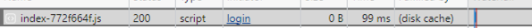

Summary
The main ReactJS bundle for the SbPAM Website is 6.5MB. This is sent with the HTTP header Cache-Control: no-cache, no-store This causes SAML Logins to sometimes fail, as downloading the ReactJS module during each login can cause the SAML token cache to expire.
To address this issue, you can create an IIS configuration setting that will update the Cache-Control header for all JavaScript files that are downloaded from the NPS Web Service. This will improve the performance of the website and lower the burden on the webservice.
Instructions
-
On all NPS servers, download and install the Url Rewrite module.
-
Navigate to your NPS Web directory (by default,
C:\Program Files\Stealthbits\PAM\Web\)and make a copy of the web.config file. -
Open the file
C:\Program Files\Stealthbits\PAM\Web\web.configin a text editor. Find this line:<system.webServer> -
Add the following XML after that line:
<rewrite> <outboundRules> <rule name="Set cache for JS"> <match serverVariable="RESPONSE_Cache_Control" pattern=".*" /> <conditions> <add input="{REQUEST_URI}" pattern="\.js$" /> </conditions> <action type="Rewrite" value="max-age=604800"/> </rule> </outboundRules> </rewrite> ```xml -
Save the file
-
Launch a PowerShell window and restart IIS using the command:
iisreset -
To verify the file is now cached, open Chrome or Edge and then open the developer tools.
-
Open your NPS web page and look at the
Networktab in the developer tools Window. -
See the page download:
-
Reload the page, see it is loaded from the cache:
 -
Copy the updated
web.configtoC:\Program Files\Stealthbits\PAM\Web\web.config.rewrite, you will need this for future upgrades.
Upgrades
- After an upgrade of NPS, you will need to copy the
C:\Program Files\Stealthbits\PAM\Web\web.config.rewritefile toC:\Program Files\Stealthbits\PAM\Web\web.configin order to restore the cache settings.